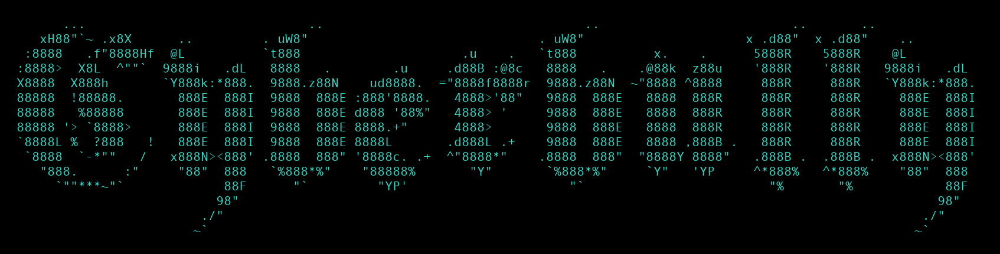
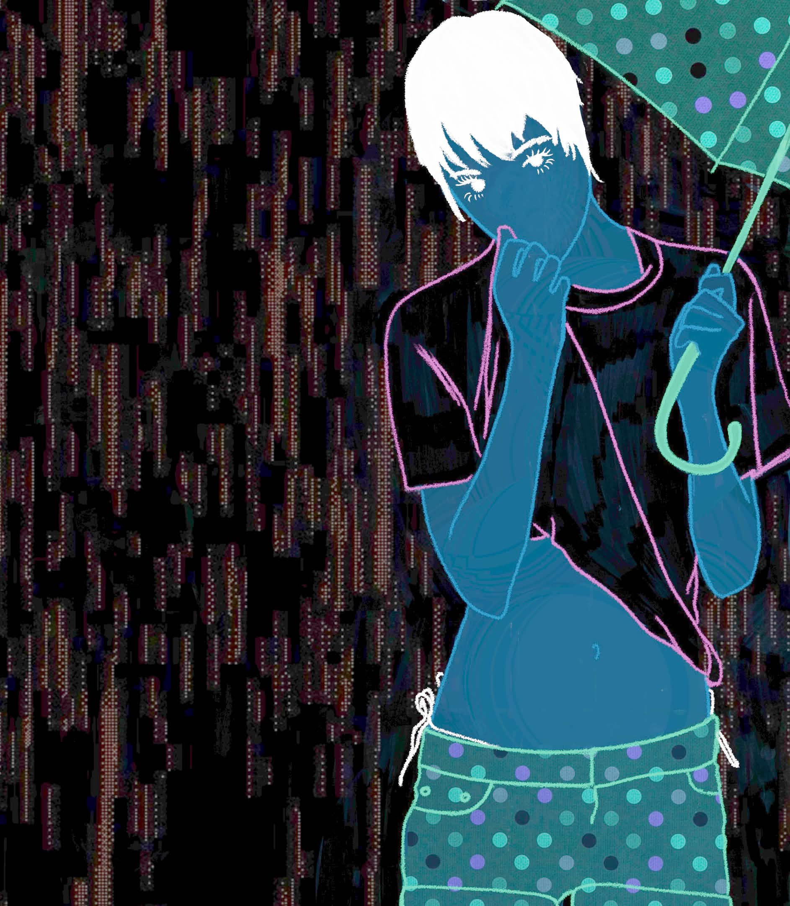

Submit

NEXT READING SUBMISSION DEADLINE 11/05/2026

WHAT WE WANT
SUBMISSIONS ARE CURRENTLY OPEN!
Please send us your poetry, flash/short fiction, autofiction, critique and any other experimental forms you wish to read or show us. Our priority are writers who can write and present their work at our readings in Sydney.
We want anything related to love, hate, death, repulsion, popular culture, history, violence, the future, the internet, comedy, sex, politics, economics, technology, girls, feminism, animals, fashion, fags, cigarettes, drugs, family, art, fear, and anything else you can think of.
We aren't super picky about formatting and writing conventions. We accept writing that has already been published.
SUBMISSION GUIDELINES
- Flash fiction and poetry: 800 words maximum
- Short fiction and critique: 2000 words maximum
- Autofiction: 1500 words maximum
Send your submissions to cyberbullysydney@gmail.com with the following information:
- Your name
- Your work in a .docx or .pdf format
- Whether you will be able to perform your work at our readings
- (Optional) A introduction that we will use to introduce you at our readings and zines
- (Optional) Your social media handles or where you'd best like to be credited
- (Optional) Where you'd like to be contacted. If you don't specify, please monitor your emails for a response from us.
FAQ
Can I submit multiple pieces?
Yes, but limit yourself to 3 pieces maximum per submission period.
Do you accept previously published work?
Yes, as long as you have the rights to perform it publicly.
What if I can't make it to the reading?
Unfortunately, we prioritise writers who can attend and perform their work live.
Is there a submission fee?
No, submissions are completely free.
When will I hear back regarding my submission?
We will aim to review your writing and contact you within a week of submission.
Ready to submit?
cyberbullysydney@gmail.com